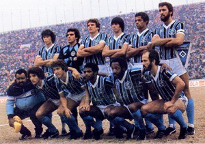

- 3 Copas Libertadores da América (1983, 1995, 2017)
- 2 Copas Intercontinentais (1983, 1984)
- 5 Copa do Brasil (campeão em 1989, 1994, 1997, 2001 e 2016)
- 2 Recopas Sul-Americanas (1996, 2018)
- 42 Campeonatos Gaúchos (incluindo o primeiro título em 1921 e o mais recente em 2024)
- 5 Campeonatos Brasileiros Série A (1981, 1996, 1999, 2001, 2010)
- 6 Copa Sul (1999, 2000, 2015, 2016, 2020, 2021)
- 3 Supercopas Libertadores (1988, 1990, 2017)
- 3 Campeonatos Brasileiros Série B (1982, 2005, 2021)
- 1 Copa Rio Branco (1967)
Alcindo, Aírton, Arce, Calvet, Eurico Lara, Everaldo, Foguinho, Hugo de León, Ronaldinho, Renato Gaúcho.
